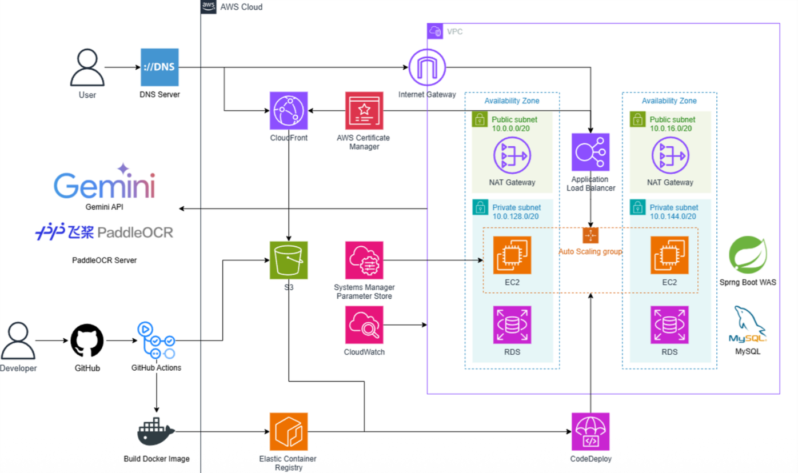

OCR Error Propagation
Problem OCR 오류가 그대로 AI 분석에 전달될 경우 최종 분석 결과의 신뢰도가 낮아질 수 있었습니다.
Solution PaddleOCR 결과와 원본 문서를 Gemini에 함께 전달하여 교차검증하고, 신뢰도가 낮으면 즉시 분석하지 않고 사용자 검수 단계로 이동하도록 설계했습니다.
02 / INDUSTRY COLLABORATION PROJECT
AI-powered Wage Anomaly Detection Platform
for Foreign Workers
외국인 근로자가 급여명세서, 근로계약서, 입출금 내역, 출퇴근 기록 등 다양한 근로 자료를 업로드하면 OCR과 AI를 이용해 임금 정보를 구조화하고 임금 이상 가능성을 분석하는 웹 서비스.

PROBLEM
외국인 근로자는 언어 장벽과 복잡한 노동법 용어 때문에 자신의 임금이 정확하게 지급되었는지 판단하기 어렵습니다. 실제 증빙자료 또한 정형 PDF에 한정되지 않고 다양한 형태로 존재합니다.
SOLUTION FLOW
CORE FEATURES
AI PIPELINE
OCR은 텍스트 추출, LLM은 정보 구조화와 설명을 담당합니다. 정확한 수치 계산과 이상 여부 검증은 백엔드의 결정론적인 로직으로 분리하는 방향으로 설계했습니다.
PROBLEM SOLVING
Problem OCR 오류가 그대로 AI 분석에 전달될 경우 최종 분석 결과의 신뢰도가 낮아질 수 있었습니다.
Solution PaddleOCR 결과와 원본 문서를 Gemini에 함께 전달하여 교차검증하고, 신뢰도가 낮으면 즉시 분석하지 않고 사용자 검수 단계로 이동하도록 설계했습니다.
Problem 실제 자료가 정형 PDF뿐 아니라 캡처, 사진, 메신저 대화 등 다양했습니다.
Solution PaddleOCR 기반 전처리와 Gemini 구조화를 결합하여 비정형 자료까지 분석 파이프라인에 포함했습니다.
Problem LLM이 법적·수치 판단까지 직접 담당하면 환각이나 오판 가능성이 있었습니다.
Solution LLM은 문서 이해와 구조화를 담당하고, 정확한 계산과 이상 여부 판단은 백엔드 룰 기반 검증으로 분리했습니다.
ARCHITECTURE
Delivery GitHub Actions로 빌드 및 배포 흐름을 구성

PROJECT RESULT
MY CONTRIBUTION
서비스 기능을 지원하는 Spring Boot 기반 REST API를 개발하고, 프론트엔드 및 AI 분석 서비스가 연동될 수 있도록 API 흐름을 구현했습니다.
AWS 환경의 애플리케이션 및 데이터 흐름을 관리하고, 서비스 구성 요소가 안정적으로 연결될 수 있도록 인프라 운영을 담당했습니다.
문서 분석 파이프라인과 백엔드 서비스 간 연동을 지원하며, 협업을 위한 API 명세와 개발 환경을 관리했습니다.
COLLABORATION